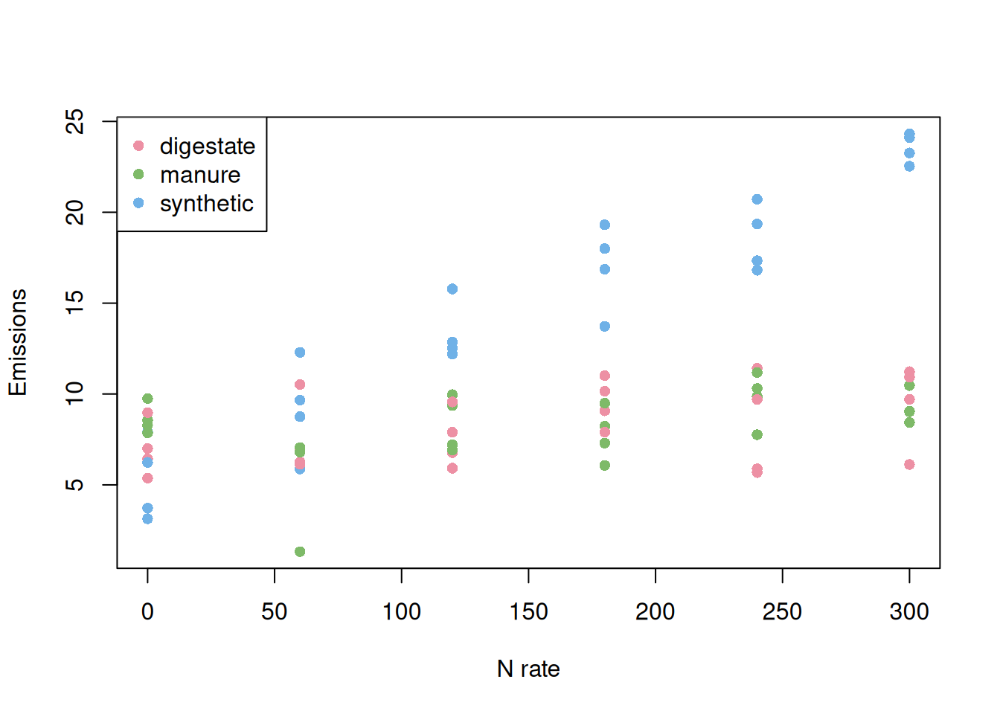
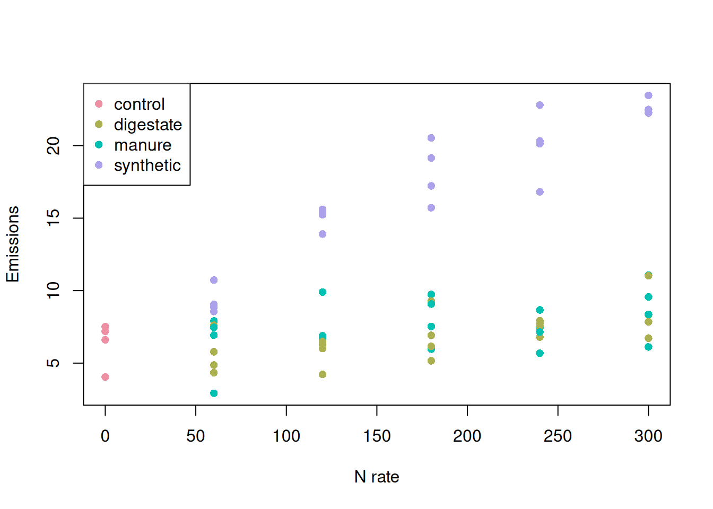

rates <- seq(0, 300, 60)
sources <- c('synthetic', 'manure', 'digestate')
replications <- 1:4
experimental.structure <- expand.grid(rate = rates,
source = sources,
rep = replications,
stringsAsFactors = FALSE)Introduction
Recently, I was talking to some friends about experimental design (exciting topic, right?!) and we reached a topic that I had not thought would be a controversy before. When we are planning an experiment, how many controls should we include? I guess the answer to that question is often the usual agronomist answer: it depends.
In many agronomic experiments, this question really hinges on how we conceptualize the “control.” If “control” is simply the 0 rate of a fertilizer, then it is a level of the rate factor, not a separate source. But if we treat “control” as its own fertilizer source, we have implicitly changed the structure of the experiment.
In this post, I will explore some of my ideas on the topic. I do not claim that they are universally valid, but I will explain my train of thought so you can judge whether these ideas apply to your case. Let’s dive into it!

How did this discussion start?
We started talking about this when thinking about how to analyze an experiment that had already been conducted in a controlled environment. The experiment was relatively simple, and the researchers wanted to evaluate the effect of fertilizer source (e.g., synthetic fertilizer, manure, digestate) and rate (i.e., how much fertilizer was applied) on nitrogen oxide emissions. In addition, they had four replications of the treatments.
So, this experiment had two factors: rate and source. If this experiment were planned to follow a factorial design, we would have had all combinations of all levels of both factors. The nitrogen rates ranged from 0 to 300 kg/ha, in 60 kg/ha intervals, and there were 3 sources of nitrogen. The experimental design should look something like this:
The number of experimental units per combination of factors would be four, resulting in 72 experimental units.
with(experimental.structure,addmargins(table(source, rate))) rate
source 0 60 120 180 240 300 Sum
digestate 4 4 4 4 4 4 24
manure 4 4 4 4 4 4 24
synthetic 4 4 4 4 4 4 24
Sum 12 12 12 12 12 12 72However, that’s not how the experiment was planned. Since the rate “0” means that no nitrogen source was applied, the researchers decided to include a single set of 0-nitrogen experimental units to serve as their control. By doing this, they eliminated 8 experimental units from the design, potentially saving time and resources but, in my view, creating some problems for the analysis. This is not the first time I have seen this, as this strategy is common in agronomic experiments. As someone who has collected a lot of data in the field, I understand the urge to save resources. However, let’s take a look at what this means for the analysis.
experimental.structure2 <- experimental.structure
experimental.structure2 <- subset(experimental.structure2,
!(rate == 0 & source %in% c('manure', 'digestate')))
experimental.structure2$source[experimental.structure2$rate == 0] <- 'control'
with(experimental.structure2,addmargins(table(source, rate))) rate
source 0 60 120 180 240 300 Sum
control 4 0 0 0 0 0 4
digestate 0 4 4 4 4 4 20
manure 0 4 4 4 4 4 20
synthetic 0 4 4 4 4 4 20
Sum 4 12 12 12 12 12 64The table above brings to light a problem that this experimental design has in the analysis stage. Should the “control” experimental units be in their own “source” level? Or should they be assigned to one of the pre-existing levels of source? I think we can understand the implications of this experimental design a little bit better with a more concrete example.
Let’s build an example
Let us build a conceptual example in which both manure and digestate present similar responses to nitrogen rate in terms of nitrogen emissions, and synthetic fertilizer presents a greater potential for emissions.
This conceptual response to nitrogen rate can be seen in this function, in which the rate of emission increases when the source is “synthetic.” For this exercise, we will pretend that this is the true relationship that we are trying to uncover by running this experiment.
conceptual.response <- function(x, a, b, src){
if(src == 'synthetic')
b <- b + 0.05
resp <- a + b * x
resp
}
conceptual.response <- Vectorize(conceptual.response,
c('x', 'src'))
xvec <- 0:300
plot(xvec,
conceptual.response(xvec, 6, 0.1, 'not synthetic'),
xlab = 'N rate',
ylab = 'Emissions',
type = 'l')
lines(xvec,
conceptual.response(xvec, 6, 0.1, 'synthetic'),
col = 'red')
legend('topleft',
lty = 1,
col = c('black', 'red'),
legend = c('Not synthetic', 'synthetic'))
Here I am using a simple linear relationship to keep the example transparent. This is not meant to imply emissions must be linear in real systems, just that linear models clearly reveal what happens when treatment combinations are missing. The slopes in the simulated example (0.01 for non-synthetic and +0.05 additional slope for synthetic) are chosen for numerical clarity rather than biological realism.
Factorial design
Let’s see how well we can uncover this relationship when we use a full factorial design.
noise <- rnorm(nrow(experimental.structure),
mean = 0,
sd = 2)
experimental.structure$emissions <- with(experimental.structure,
conceptual.response(rate,
6,
0.01,
source)) + noiseplot(experimental.structure$rate,
experimental.structure$emissions,
pch = 16,
col = hcl.colors(3, 'Set 2')[as.factor(experimental.structure$source)],
xlab = 'N rate',
ylab = 'Emissions')
legend('topleft',
pch = 16,
col = hcl.colors(3, 'Set2'),
legend = levels(as.factor(experimental.structure$source)))
Here, we have all levels represented and the mock data can be used to model the relationship between our response variable and the factors rate and source. This model was able to estimate all the effects that we were interested in. Now, let’s see what happens when we include only one control.
fit1 <- lm(emissions ~ rate + source + rate:source,
data = experimental.structure)
summary(fit1)
Call:
lm(formula = emissions ~ rate + source + rate:source, data = experimental.structure)
Residuals:
Min 1Q Median 3Q Max
-6.2294 -1.0870 -0.0345 1.3839 3.1044
Coefficients:
Estimate Std. Error t value Pr(>|t|)
(Intercept) 6.9864257 0.6949355 10.053 6.09e-15 ***
rate 0.0080260 0.0038255 2.098 0.0397 *
sourcemanure 0.1292932 0.9827872 0.132 0.8957
sourcesynthetic -1.3267799 0.9827872 -1.350 0.1816
rate:sourcemanure -0.0007077 0.0054101 -0.131 0.8963
rate:sourcesynthetic 0.0507216 0.0054101 9.375 9.41e-14 ***
---
Signif. codes: 0 '***' 0.001 '**' 0.01 '*' 0.05 '.' 0.1 ' ' 1
Residual standard error: 1.92 on 66 degrees of freedom
Multiple R-squared: 0.8626, Adjusted R-squared: 0.8522
F-statistic: 82.89 on 5 and 66 DF, p-value: < 2.2e-16This model correctly estimates all main effects and interactions because the design contains every treatment combination. Importantly, the model is assuming linearity with respect to rate, but that choice is independent from the factorial structure. Even nonlinear models would require all treatment combinations to be present to identify source-specific responses.
Including only one control
noise <- rnorm(nrow(experimental.structure2),
mean = 0,
sd = 2)
experimental.structure2$emissions <- with(experimental.structure2,
conceptual.response(rate,
6,
0.01,
source)) + noiseHere, we can see a first source of uncertainty/awkwardness. We need to decide what to do with the “control” plots. Do we leave them by themselves in the “control” category? Should we assign the control to one of the other fertilizer sources? Let’s proceed by leaving the “control” experimental units in their own category.
Control experimental units in their own category
Let’s visualize these data to understand this source of uncertainty better. We have four observations sitting at the 0-nitrogen rate and assigned to the control treatment. Somehow, these observations are supposed to help us estimate the relationship between nitrogen emissions and nitrogen rate for the other three “source” treatments.
Next, we can proceed to fitting the same model as before and see if we can estimate all model parameters.
plot(experimental.structure2$rate,
experimental.structure2$emissions,
pch = 16,
col = hcl.colors(4, 'Set 2')[as.factor(experimental.structure2$source)],
xlab = 'N rate',
ylab = 'Emissions')
legend('topleft',
pch = 16,
col = hcl.colors(4, 'Set2'),
legend = levels(as.factor(experimental.structure2$source)))
fit2.1 <- lm(emissions ~ rate + source + rate:source,
data = experimental.structure2)
summary(fit2.1)
Call:
lm(formula = emissions ~ rate + source + rate:source, data = experimental.structure2)
Residuals:
Min 1Q Median 3Q Max
-3.7437 -0.9386 0.0044 0.9080 3.5050
Coefficients: (1 not defined because of singularities)
Estimate Std. Error t value Pr(>|t|)
(Intercept) 6.341195 0.811710 7.812 1.41e-10 ***
rate 0.052725 0.004278 12.324 < 2e-16 ***
sourcedigestate -1.715206 1.176279 -1.458 0.150
sourcemanure -0.138808 1.176279 -0.118 0.906
sourcesynthetic 1.199119 1.176279 1.019 0.312
rate:sourcedigestate -0.040361 0.006050 -6.671 1.12e-08 ***
rate:sourcemanure -0.045019 0.006050 -7.441 5.86e-10 ***
rate:sourcesynthetic NA NA NA NA
---
Signif. codes: 0 '***' 0.001 '**' 0.01 '*' 0.05 '.' 0.1 ' ' 1
Residual standard error: 1.623 on 57 degrees of freedom
Multiple R-squared: 0.9223, Adjusted R-squared: 0.9142
F-statistic: 112.8 on 6 and 57 DF, p-value: < 2.2e-16One of the first things we can see is that estimating the interaction terms can be problematic. We are missing some levels, which can be seen as zero counts in this table. This prevents us from estimating the interaction terms.
with(experimental.structure2, addmargins(table(source, rate))) rate
source 0 60 120 180 240 300 Sum
control 4 0 0 0 0 0 4
digestate 0 4 4 4 4 4 20
manure 0 4 4 4 4 4 20
synthetic 0 4 4 4 4 4 20
Sum 4 12 12 12 12 12 64Replicating the control data
One of the ways I have seen researchers deal with this problem in the analysis is by replicating the control data to the other experimental units. I think the idea is that the control should present about the same variability regardless of treatment combination. However, I believe this is a major violation of the model assumptions. Namely, this violates the assumption of independence of the residuals. Are there residuals more dependent among themselves than those from copied data? :)
I will show here what I mean by this, but I am not recommending this to anyone.
experimental.structure3 <- experimental.structure2
control.indices <- which(experimental.structure3$source == 'control')
experimental.structure3 <- rbind(experimental.structure3,
experimental.structure3[rep(control.indices, 2), ])
control.indices <- which(experimental.structure3$source == 'control')
experimental.structure3$source[control.indices] <- rep(unique(experimental.structure$source), rep(4, 3))This data set now contains a structure similar to the first data set, but models fit using these data violate an important assumption of regression models. Additionally, this approach artificially inflates the number of observations in the data set. In turn, this reduces standard errors and increases the chances of finding differences when there are none.
with(experimental.structure3, addmargins(table(source, rate))) rate
source 0 60 120 180 240 300 Sum
digestate 4 4 4 4 4 4 24
manure 4 4 4 4 4 4 24
synthetic 4 4 4 4 4 4 24
Sum 12 12 12 12 12 12 72My two cents :)
I decided to write this text out of a conversation I had with a friend to show how I think about this. I believe there might be people out there with alternative points of view, and I would love to hear more about it. For what it is worth, I believe that experimental design is an important and often overlooked step in the scientific process. I can only imagine how frustrating it would be to run a trial and then not be able to run the analysis correctly.
I think the main message here is that statistical identifiability is not something we can recover after the fact. Once certain treatment combinations are missing from the experimental design, we might not be able to answer the scientific questions that we set out to investigate.